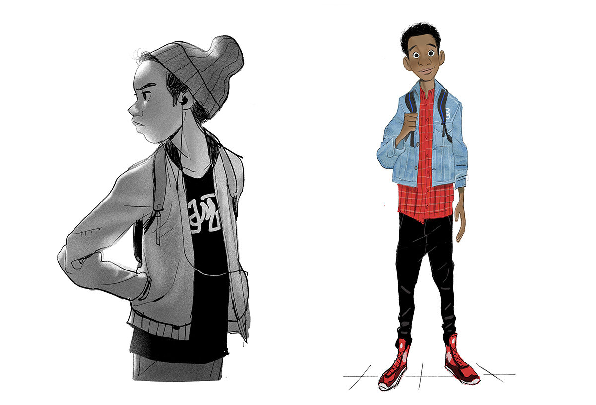
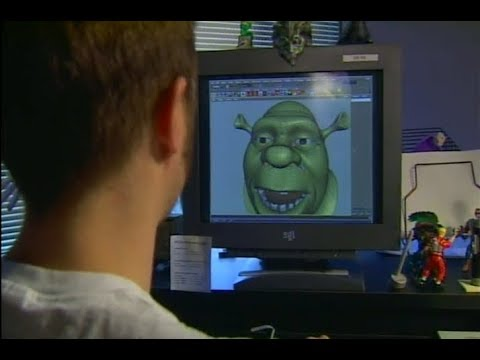

3D-графіка у фільмах і мультфільмах
Тривимірна графіка у фільмах і мультфільмах сьогодні майже повністю базується на технологіях CGI (Computer-Generated Imagery) та VFX (Visual Effects). Саме завдяки їм на екрані з’являються фантастичні світи, істоти й сцени, які неможливо або надто дорого зняти в реальності. На відміну від ігрової 3D-графіки, де ключовою є швидкість обчислень у реальному часі, у кіно головний акцент робиться на кінематографічну якість, фотореалізм, деталізацію та художню виразність кожного кадру. Виробництво CGI відбувається в межах складного production pipeline, де сотні спеціалістів працюють над різними етапами: від ідеї та концепту до фінального рендеру й композитингу. Часто комп’ютерна графіка інтегрується з живими зйомками за допомогою green screen, трекінгу камери та цифрових дублерів, створюючи ілюзію єдиного світу. Тому створення 3D-графіки для фільмів — це поєднання мистецтва, програмних технологій і потужних обчислень.
Концепція та художнє планування
Першим етапом CGI-pipeline є pre-production, де формується загальне бачення майбутнього фільму або анімаційного проєкту. Тут визначається, які сцени будуть створені за допомогою CGI, які персонажі стануть цифровими, а де відбудеться поєднання з реальними зйомками. Художники створюють concept art, matte-ескізи та moodboard’и, що задають стиль, кольорову гаму й атмосферу. Важливою частиною є також storyboard і превізуалізація (previs) — чорнові 3D-анімації, які допомагають спланувати рух камери, монтаж і складні сцени ще до початку основного виробництва. Уже тут технічні директори оцінюють складність сцен, потребу в симуляціях і вимоги до рендеру. Чітке планування на цьому етапі дозволяє вибудувати ефективний pipeline і уникнути дорогих переробок у майбутньому.
↓↓↓

Побудова форми та візуального вигляду
На етапі 3D-modeling створюються всі цифрові об’єкти — CGI-assets. Моделери починають із блокінгу форм, формуючи базову геометрію, після чого переходять до детального high-poly sculpting у спеціалізованих програмах. Для фотореалістичних фільмів особлива увага приділяється анатомії, пропорціям і мікродеталям поверхні. Далі виконується retopology для створення чистої сітки та UV-mapping для правильного накладання текстур. Наступний крок — texturing і shading: художники створюють PBR-текстури, що описують колір, шорсткість, металевість та інші властивості матеріалів. За допомогою шейдерів модель починає поводитися як реальний об’єкт під світлом. У результаті формується повністю підготовлений візуальний asset, готовий до інтеграції у сцену.
Оживлення сцени: рух і світло
Щоб цифрові об’єкти стали «акторами», застосовується rigging — створення системи кісток і контролерів. Після цього в процесі animation аніматори задають рухи, використовуючи принципи класичної анімації та референси з реального життя або motion capture. Особлива увага приділяється міміці та дрібним жестам. Паралельно формується lighting сцени: налаштовується освітлення, імітується атмосфера та час доби. Віртуальна камера працює за законами кінозйомки — з глибиною різкості та кінематографічними рухами. Усе це разом створює основу для виразного кадру.
Фінальна візуалізація та постобробка
На стадії rendering сцена передається в рендер-движок, який обчислює кожен піксель з урахуванням фізики світла. Для великих проєктів використовують render-ферми, що прораховують тисячі кадрів паралельно. Зображення часто рендеряться у вигляді окремих passes, щоб мати більше контролю на наступному етапі. Потім кадри потрапляють у compositing, де їх поєднують із live action-матеріалом, додають VFX-елементи, корекцію кольору та фінальні штрихи. Саме тут CGI остаточно інтегрується у фільм і стає невід’ємною частиною кінематографічного образу.